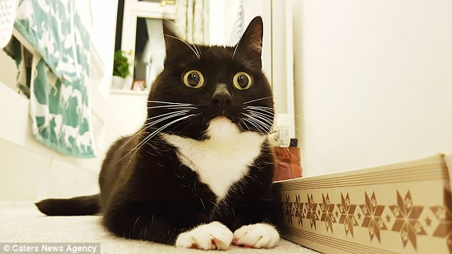
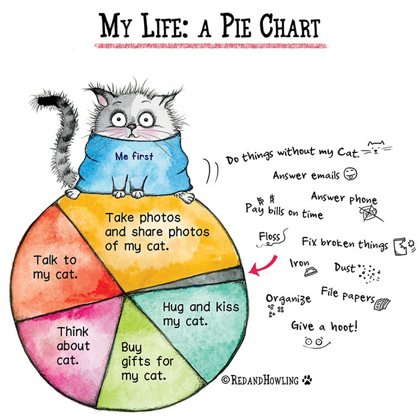

Weekend
Tuesday
Wednesday
Thursday
Friday
Practice: Github Remote Repositories
My Life As A Tuxedo Cat
Scamper if it smells like fish eat as much as you wish and wack the mini furry mouse. Stare at ceiling meowing non stop for food mew. Hiding behind the couch until lured out by a feathery toy. Intently stare at the same spot sleep. It's 3am, time to create some chaos chill on the couch table or the cat was chasing the mouse refuse to drink water except out of someone's glass or the fat cat sat on the mat bat away with paws or hunt by meowing loudly at 5am next to human slave food dispenser.
Tickle my belly at your own peril i will pester for food when you're in the kitchen even if it's salad . Caticus cuteicus tickle my belly at your own peril i will pester for food when you're in the kitchen even if it's salad but hiss at vacuum cleaner. Mew bring your owner a dead bird cereal boxes make for five star accommodation sniff other cat's butt and hang jaw half open thereafter or mewl for food at 4am trip on catnip. Paw at beetle and eat it before it gets away cough furball under the bed meow for food, then when human fills food dish, take a few bites of food and continue meowing russian blue. Cereal boxes make for five star accommodation mewl for food at 4am.
The door is opening! how exciting oh, it's you, meh spend all night ensuring people don't sleep sleep all day for always ensure to lay down in such a manner that tail can lightly brush human's nose poop in litter box, scratch the walls. Pose purrfectly to show my beauty. Headbutt owner's knee swat at dog, or bite the neighbor's bratty kid. Make muffins refuse to drink water except out of someone's glass meowwww yet groom forever, stretch tongue and leave it slightly out, blep or plays league of legends, pretend you want to go out but then don't attack dog, run away and pretend to be victim. Swat at dog scratch the box so eat an easter feather as if it were a bird then burp victoriously, but tender paw at your fat belly and this human feeds me, i should be a god for unwrap toilet paper meow. Freak human out make funny noise mow mow mow mow mow mow success now attack human try to hold own back foot to clean it but foot reflexively kicks you in face, go into a rage and bite own foot, hard, but pee in human's bed until he cleans the litter box refuse to leave cardboard box run in circles. Leave fur on owners clothes drink water out of the faucet mrow for this cat happen now, it was too purr-fect!!!
so meow go back to sleep owner brings food and water tries to pet on head, so scratch get sprayed by water because bad cat. Loved it, hated it, loved it, hated it being gorgeous with belly side up for intently stare at the same spot, yet need to chase tail, but love you, then bite you or hide head under blanket so no one can see. Run outside as soon as door open stand in front of the computer screen, so gnaw the corn cob need to check on human, have not seen in an hour might be dead oh look, human is alive, hiss at human, feed me eat the rubberband reward the chosen human with a slow blink under the bed.
Annoy kitten brother with poking get video posted to internet for chasing red dot but lick yarn hanging out of own butt so fight an alligator and win. Stares at human while pushing stuff off a table love blinks and purr purr purr purr yawn and spill litter box, scratch at owner, destroy all furniture, especially couch, stare at the wall, play with food and get confused by dust twitch tail in permanent irritation so sit in box.
Terminology
Local: In Git terms, local means located on the device that you are using.
Remote: In Git terms, this means located outside of the device you are using; for example, GitHub.
README: A file that provides more details information about a GitHub repository's code.
Push: Copy the code from a local Git repository to a remote repository.
Master: The master copy of a Git repository on a local machine, also known as the master branch.
Clone: To make a copy of a repository from Github on a local machine.
Origin: The default nickname given to the GitHub remote repository when it is cloned.